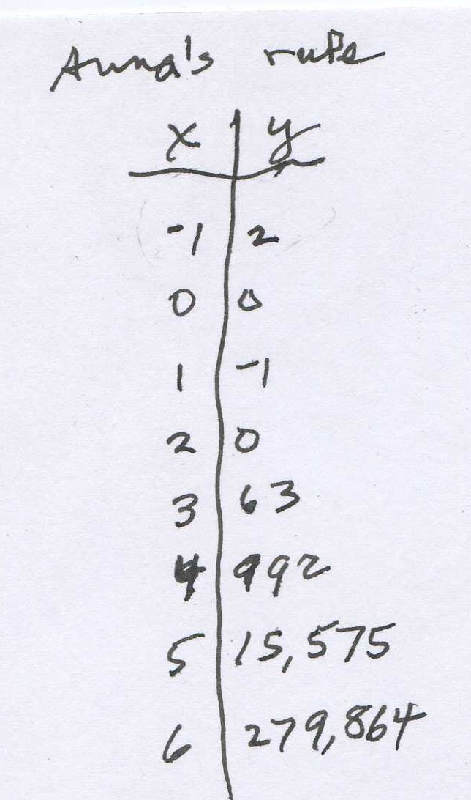
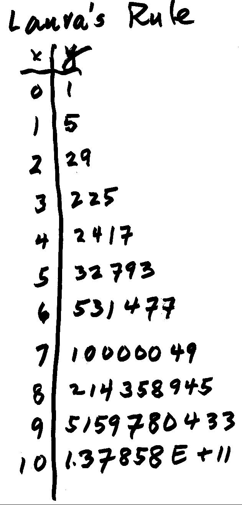

The discovery of the year 2010-2011 is David's Rule Generator. We can't show this now because he is sending it in to be published!
[N.B. - the next differences in each case above, are zero.]
You can click here to see how Don figured out the cubic on the right above, without a calculator or computer. See Sheri's work on the Tower Puzzle rule and look at the differences with an exponential function .
Some of Don's students make up very hard rules, like Anna, a 4th grader, did. Anna did give Don a hint that her rule was exponential. Don spent over an hour working on her rule, without success, then he gave her table of numbers to another of his students, Jerry, a 5th grader, who figured it out in about 20 minutes. Don likes it when his students do better than he does! [Anna made a small mistake- the first pair should be (-1, -1)].

Here are a couple of more rules, see if you can figure them out:

See Jerry's rule, unusual, to say the least!
More FUNCTIONS to explore
1. How many Squares can you make
'on a 4 x 4 geoboard (square array of nails/dots)?
...on a 20 x 20 geoboard (square array of nails/dots)?
You have a circular pie and make straight line cuts. Try to get as many pieces per cut as you can; with 5 cuts, how many pieces?
How does the area of a picture change with the distance from the projector to the screen?
Height of a burning candle vs. time.
Rectangles with constant area of 36, length vs. width.
Perimeter of rectangles with constant area of 36, length vs. perimeter.(see Map-Maya's work)
edge of cube vs. surface area.
edge of cube vs. volume.
SA/Vol ratios of rods (Nanako) and why small animals are noctunal
Celsius vs. Fahrenheit Temperature.
Weight vs. stretch of a spring.
Length of shadow vs. height of object.
Bicycle: a. # wheel turns vs. # pedal turns
b. Distance wheel moves vs. # pedal turns. (changing gears.?)
Tower puzzle: # discs. vs. minimum # of moves to move the pile.
Shuttle puzzle: # pairs of pegs vs. no. of moves to interchange the color pegs.
Resistance of wire vs. thickness.
Pulse beat vs. length of animal.
Triangular nos., square nos., pentagonal nos'.
Polyhedral nos.
SA/vol ratio of rods (see Map)